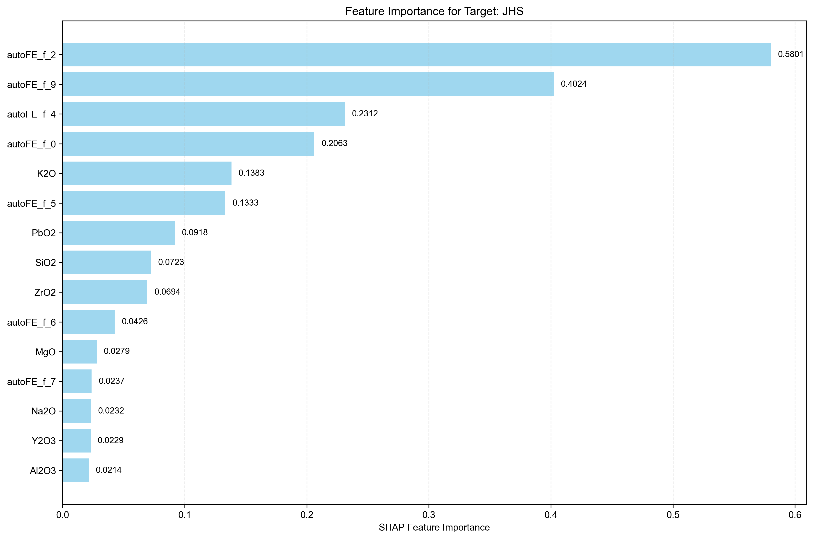
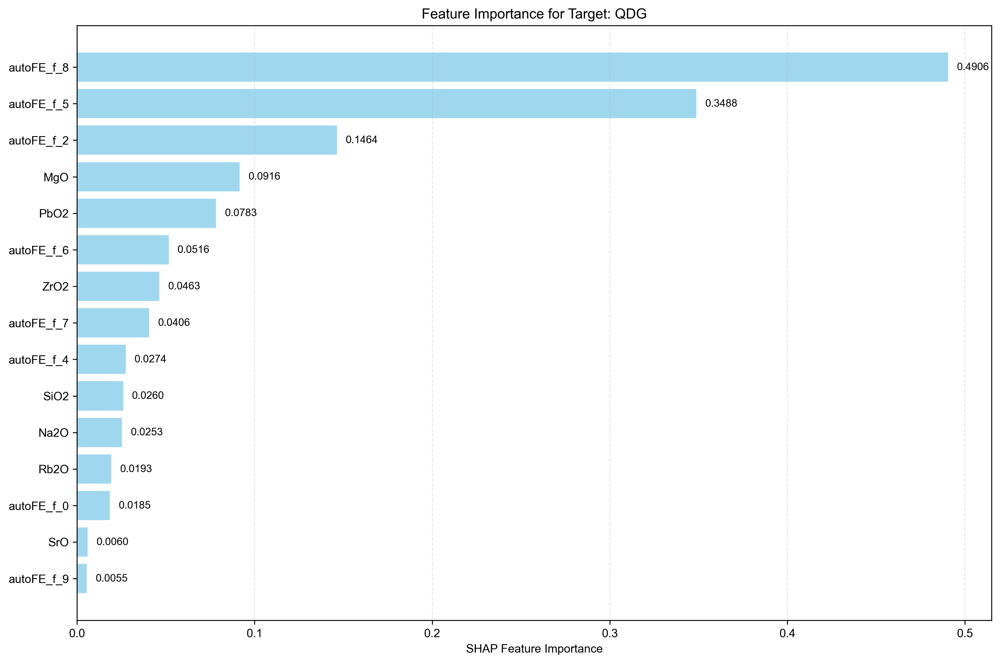
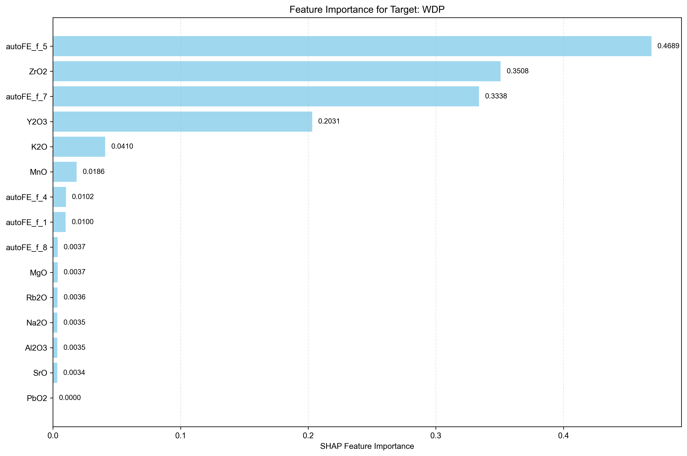
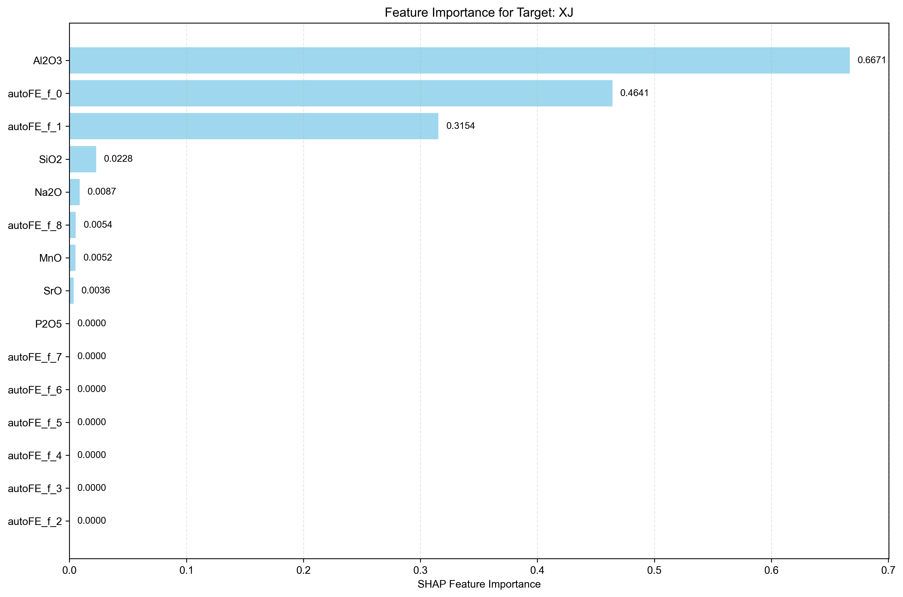
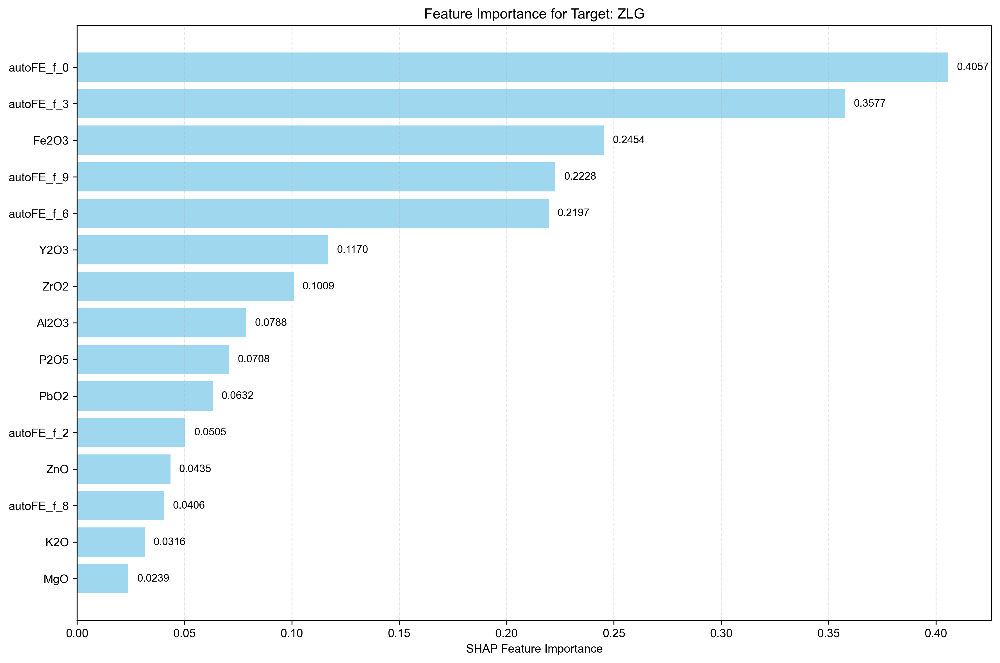

Analysis Method: SHAP
Number of Targets: 5
Generated on:
Targets Analyzed: JHS, QDG, WDP, XJ, ZLG
| Rank | Feature Name | SHAP Importance | Relative Importance (%) |
|---|---|---|---|
| 1 | autoFE_f_2 | 0.5801 | 26.83% |
| 2 | autoFE_f_9 | 0.4024 | 18.61% |
| 3 | autoFE_f_4 | 0.2312 | 10.69% |
| 4 | autoFE_f_0 | 0.2063 | 9.54% |
| 5 | K2O | 0.1383 | 6.40% |
| 6 | autoFE_f_5 | 0.1333 | 6.16% |
| 7 | PbO2 | 0.0918 | 4.25% |
| 8 | SiO2 | 0.0723 | 3.34% |
| 9 | ZrO2 | 0.0694 | 3.21% |
| 10 | autoFE_f_6 | 0.0426 | 1.97% |
| 11 | MgO | 0.0279 | 1.29% |
| 12 | autoFE_f_7 | 0.0237 | 1.10% |
| 13 | Na2O | 0.0232 | 1.07% |
| 14 | Y2O3 | 0.0229 | 1.06% |
| 15 | Al2O3 | 0.0214 | 0.99% |
| 16 | autoFE_f_8 | 0.0150 | 0.69% |
| 17 | Fe2O3 | 0.0143 | 0.66% |
| 18 | ZnO | 0.0124 | 0.57% |
| 19 | P2O5 | 0.0119 | 0.55% |
| 20 | autoFE_f_3 | 0.0086 | 0.40% |
| 21 | autoFE_f_1 | 0.0084 | 0.39% |
| 22 | MnO | 0.0050 | 0.23% |
| 23 | As2O3 | 0.0000 | 0.00% |
| 24 | CuO | 0.0000 | 0.00% |
| 25 | Rb2O | 0.0000 | 0.00% |
| 26 | SrO | 0.0000 | 0.00% |

| Rank | Feature Name | SHAP Importance | Relative Importance (%) |
|---|---|---|---|
| 1 | autoFE_f_8 | 0.4906 | 34.28% |
| 2 | autoFE_f_5 | 0.3488 | 24.37% |
| 3 | autoFE_f_2 | 0.1464 | 10.23% |
| 4 | MgO | 0.0916 | 6.40% |
| 5 | PbO2 | 0.0783 | 5.47% |
| 6 | autoFE_f_6 | 0.0516 | 3.61% |
| 7 | ZrO2 | 0.0463 | 3.24% |
| 8 | autoFE_f_7 | 0.0406 | 2.84% |
| 9 | autoFE_f_4 | 0.0274 | 1.91% |
| 10 | SiO2 | 0.0260 | 1.82% |
| 11 | Na2O | 0.0253 | 1.77% |
| 12 | Rb2O | 0.0193 | 1.35% |
| 13 | autoFE_f_0 | 0.0185 | 1.29% |
| 14 | SrO | 0.0060 | 0.42% |
| 15 | autoFE_f_9 | 0.0055 | 0.38% |
| 16 | Fe2O3 | 0.0048 | 0.34% |
| 17 | Al2O3 | 0.0041 | 0.29% |
| 18 | K2O | 0.0000 | 0.00% |
| 19 | As2O3 | 0.0000 | 0.00% |
| 20 | MnO | 0.0000 | 0.00% |
| 21 | CuO | 0.0000 | 0.00% |
| 22 | ZnO | 0.0000 | 0.00% |
| 23 | Y2O3 | 0.0000 | 0.00% |
| 24 | P2O5 | 0.0000 | 0.00% |
| 25 | autoFE_f_1 | 0.0000 | 0.00% |
| 26 | autoFE_f_3 | 0.0000 | 0.00% |

| Rank | Feature Name | SHAP Importance | Relative Importance (%) |
|---|---|---|---|
| 1 | autoFE_f_5 | 0.4689 | 32.16% |
| 2 | ZrO2 | 0.3508 | 24.06% |
| 3 | autoFE_f_7 | 0.3338 | 22.90% |
| 4 | Y2O3 | 0.2031 | 13.93% |
| 5 | K2O | 0.0410 | 2.81% |
| 6 | MnO | 0.0186 | 1.28% |
| 7 | autoFE_f_4 | 0.0102 | 0.70% |
| 8 | autoFE_f_1 | 0.0100 | 0.69% |
| 9 | MgO | 0.0037 | 0.25% |
| 10 | autoFE_f_8 | 0.0037 | 0.25% |
| 11 | Rb2O | 0.0036 | 0.25% |
| 12 | Na2O | 0.0035 | 0.24% |
| 13 | Al2O3 | 0.0035 | 0.24% |
| 14 | SrO | 0.0034 | 0.23% |
| 15 | SiO2 | 0.0000 | 0.00% |
| 16 | Fe2O3 | 0.0000 | 0.00% |
| 17 | As2O3 | 0.0000 | 0.00% |
| 18 | CuO | 0.0000 | 0.00% |
| 19 | ZnO | 0.0000 | 0.00% |
| 20 | PbO2 | 0.0000 | 0.00% |
| 21 | P2O5 | 0.0000 | 0.00% |
| 22 | autoFE_f_0 | 0.0000 | 0.00% |
| 23 | autoFE_f_2 | 0.0000 | 0.00% |
| 24 | autoFE_f_3 | 0.0000 | 0.00% |
| 25 | autoFE_f_6 | 0.0000 | 0.00% |
| 26 | autoFE_f_9 | 0.0000 | 0.00% |

| Rank | Feature Name | SHAP Importance | Relative Importance (%) |
|---|---|---|---|
| 1 | Al2O3 | 0.6671 | 44.70% |
| 2 | autoFE_f_0 | 0.4641 | 31.10% |
| 3 | autoFE_f_1 | 0.3154 | 21.14% |
| 4 | SiO2 | 0.0228 | 1.53% |
| 5 | Na2O | 0.0087 | 0.58% |
| 6 | autoFE_f_8 | 0.0054 | 0.36% |
| 7 | MnO | 0.0052 | 0.35% |
| 8 | SrO | 0.0036 | 0.24% |
| 9 | MgO | 0.0000 | 0.00% |
| 10 | K2O | 0.0000 | 0.00% |
| 11 | Fe2O3 | 0.0000 | 0.00% |
| 12 | As2O3 | 0.0000 | 0.00% |
| 13 | CuO | 0.0000 | 0.00% |
| 14 | ZnO | 0.0000 | 0.00% |
| 15 | PbO2 | 0.0000 | 0.00% |
| 16 | Rb2O | 0.0000 | 0.00% |
| 17 | Y2O3 | 0.0000 | 0.00% |
| 18 | ZrO2 | 0.0000 | 0.00% |
| 19 | P2O5 | 0.0000 | 0.00% |
| 20 | autoFE_f_2 | 0.0000 | 0.00% |
| 21 | autoFE_f_3 | 0.0000 | 0.00% |
| 22 | autoFE_f_4 | 0.0000 | 0.00% |
| 23 | autoFE_f_5 | 0.0000 | 0.00% |
| 24 | autoFE_f_6 | 0.0000 | 0.00% |
| 25 | autoFE_f_7 | 0.0000 | 0.00% |
| 26 | autoFE_f_9 | 0.0000 | 0.00% |

| Rank | Feature Name | SHAP Importance | Relative Importance (%) |
|---|---|---|---|
| 1 | autoFE_f_0 | 0.4057 | 18.34% |
| 2 | autoFE_f_3 | 0.3577 | 16.17% |
| 3 | Fe2O3 | 0.2454 | 11.09% |
| 4 | autoFE_f_9 | 0.2228 | 10.07% |
| 5 | autoFE_f_6 | 0.2197 | 9.93% |
| 6 | Y2O3 | 0.1170 | 5.29% |
| 7 | ZrO2 | 0.1009 | 4.56% |
| 8 | Al2O3 | 0.0788 | 3.56% |
| 9 | P2O5 | 0.0708 | 3.20% |
| 10 | PbO2 | 0.0632 | 2.86% |
| 11 | autoFE_f_2 | 0.0505 | 2.28% |
| 12 | ZnO | 0.0435 | 1.97% |
| 13 | autoFE_f_8 | 0.0406 | 1.84% |
| 14 | K2O | 0.0316 | 1.43% |
| 15 | MgO | 0.0239 | 1.08% |
| 16 | autoFE_f_5 | 0.0232 | 1.05% |
| 17 | autoFE_f_1 | 0.0215 | 0.97% |
| 18 | autoFE_f_7 | 0.0191 | 0.86% |
| 19 | SrO | 0.0165 | 0.75% |
| 20 | SiO2 | 0.0160 | 0.72% |
| 21 | As2O3 | 0.0148 | 0.67% |
| 22 | autoFE_f_4 | 0.0144 | 0.65% |
| 23 | Na2O | 0.0086 | 0.39% |
| 24 | MnO | 0.0060 | 0.27% |
| 25 | CuO | 0.0000 | 0.00% |
| 26 | Rb2O | 0.0000 | 0.00% |

• This report shows feature importance analysis for multi-target regression using SHAP method.
• Higher importance values indicate features that have more influence on the target prediction.
• Rankings are calculated independently for each target.
• Relative importance percentages show each feature's contribution relative to all features for that target.